Η ζωή απαρτίζεται από σπάνιες στιγμές υψίστης σημαντικότητας και αναρίθμητα πολλά διαστήματα κατά τα οποία, στην καλύτερη περίπτωση, αιωρούνται μπροστά μας κάποιες σκιές εκείνων των στιγμών.
Νίτσε
| |
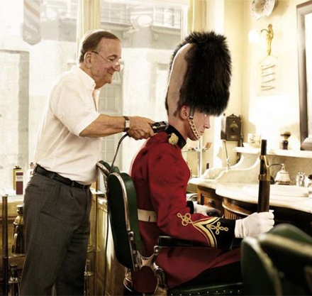
Τι έχεις στο μυαλό σου, αν μου επιτρέπεις την υπερβολή.
Fred Allen
| |
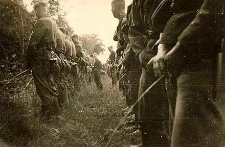
Οι αντίθετες ποιότητες των πραγμάτων του κόσμου εκκρίνονται από το ένα.
Αναξίμανδρος
| |
Στην καθημερινή εξέγερση το παράλογο αναδεικνύεται ως η μόνη αλήθεια, η οποία αποτελεί ταυτοχρόνως και πρόκληση.
Άλμπερ Καμύ
| |
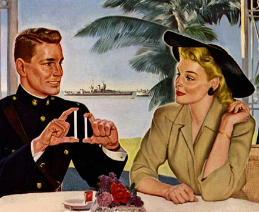
Ποια είναι η αξία της μεγαλοφυΐας αν δεν μεταδίνει, σε όποιον την αντικρίζει και την θαυμάζει, τέτοια ελευθερία κι έξαρση του συναισθήματος, ώστε αυτός να μη χρειάζεται πια τη μεγαλοφυΐα ! Να κάνεις τον εαυτό σου περιττό – αυτό είναι η δόξα όλων των μεγάλων.
Νίτσε
| |
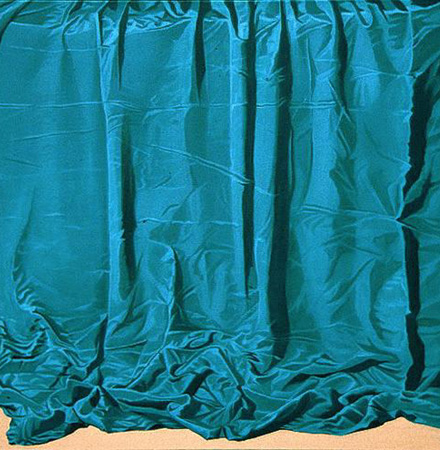
Πρέπει να πω ότι ο Μπέρναρ Σώ βελτιώνεται πολύ από τη μουσική.
T.S.Eliot
| |
Ο λόγος που συνήθως συγχωρείς τον πλησίον σου, είναι γιατί βαριέσαι να τσακωθείς.
Γ. Γκρός
| |
Αυτοί που συμβάλουν περισσότερο στη επιτυχία ενός πάρτι είναι οι απόντες.
Όσκαρ Ουάιλντ
| |
Τον μπασίστα τον κρατάω για το τέλος της περιοδείας.
Τζάνις Τζόπλιν
| |
‘Οποιος δηλώνει συνεχώς ότι δεν είναι ανόητος κάτι υποπτεύεται.
W. Mizner
| |
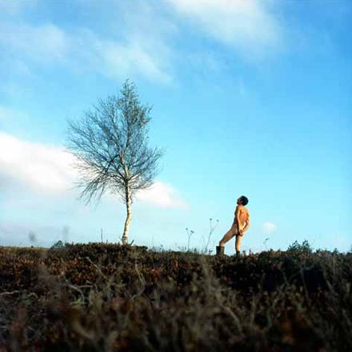
Είναι η κοπριά της ζωής που κάνει την ψυχή σου να ανθίζει.
Ολλανδία
| |
Ο κόσμος δεν μπορεί να συγχωρήσει εκείνους που δεν φταίξανε ποτέ.
Σ. Γ. Λέτς
| |
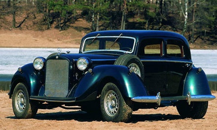
Οι συνέπειες του ορθολογισμού είναι η αλαζονεία ενός λόγου που θριαμβεύει στο απόλυτο. Και τούτο γιατί ο απόλυτος λόγος υπερασπίζεται τον εαυτό του και όχι τον άνθρωπο.
Άλμπερ Καμύ
| |
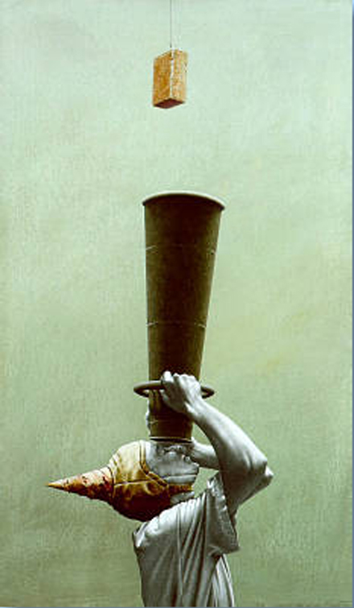
Η αγκίδα στο μάτι σου, είναι ο καλύτερος μεγεθυντικός φακός.
THEODOR ADORNO
| |
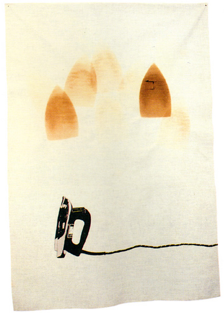
Κάποιοι ζωγράφοι μεταμορφώνουν τον ήλιο σε μία κίτρινη κουκίδα, άλλοι πάλι μεταμορφώνουν μια κίτρινη κουκίδα σε ήλιο.
Πάμπλο Πικάσο
| |
Μην κοιτάς τις πέτρες άσκοπα, αλλά σκέψου σε ποιόν μπορείς να τις πετάξεις.
Περσία
| |
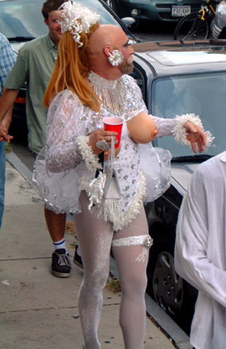
Το αδιάκοπο κάπνισμα του τσιμπουκιού του πρέπει να ήταν μια από τις αιτίες που δεν χολόσκαγε για τίποτα, γιατί ο κάθε ένας ξέρει πώς ο αέρας αυτής της γης είναι τρομερά μολυσμένος από τις απερίγραπτες αθλιότητες των αμέτρητων θνητών που έχουν πεθάνει αφήνοντας την τελευταία τους πνοή, και όπως όταν πέφτει χολέρα, μερικοί άνθρωποι κυκλοφορούν με ένα μαντήλι στο στόμα τους με καμφορά, έτσι ακριβώς και ο καπνός του τσιμπουκιού του δεν αποκλείεται να δρούσε σαν απολυμαντικό μέσο ενάντια σε κάθε ανθρώπινη στεναχώρια .
HERMAN MELVILLE
| |
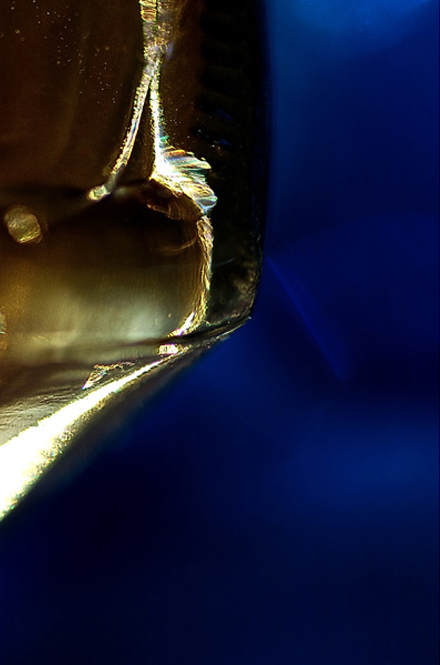
Μπλε το πέλαγος βαθύ,
φουρτουνιασμένο.
Το φεγγάρι κουτσοπίνει το κρασί του
με το κύμα.
Matsuo Basho (1600 μ.χ.)
| |
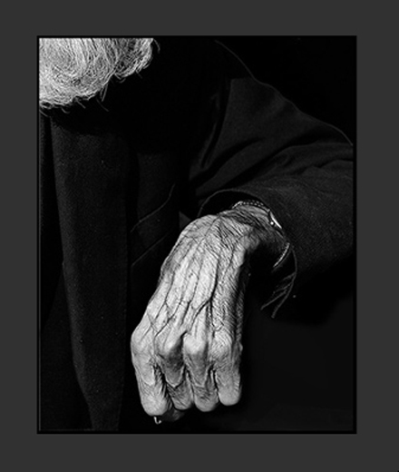
Στα γενέθλιά σου, από μια ηλικία και πάνω το μόνο που εισπράττεις είναι η χαιρεκακία.
Ζαν Μορώ
| |
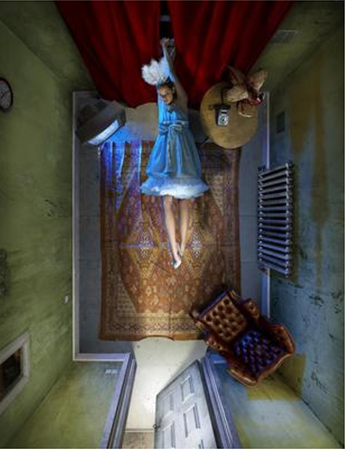
Η ποσότητα του ύπνου που χρειάζεται ένας μέσος άνθρωπος είναι περίπου πέντε λεπτά περισσότερο.
M. Kauffman
| |
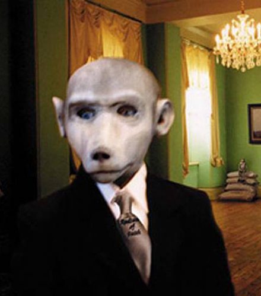
Ακούστε το "Αρκετά" σε REMIX απο V.F.D.
http://profile.myspace.com/index.cfm?fuseaction=user.viewProfile&friendID=178926105 | |
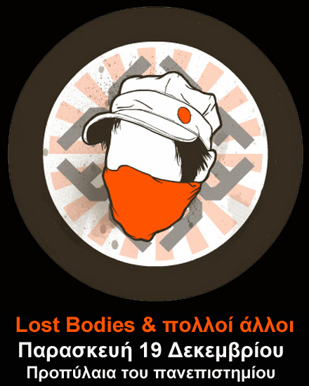
Παρασκευή 19 Δεκεμβρίου από τις 17:00
Συμμετέχουμε στην συναυλία που θα γίνει από πολλούς μουσικούς και συγκροτήματα στα Προπύλαια του πανεπιστημίου.
Συναυλία στα Προπύλαια
Αθήνα, Παρασκευή 19 Δεκεμβρίου 2008, 15:00
Ακριβής τοποθεσία: Προπύλαια
Διοργάνωση: Συντονιστικό Γενικών Συνελεύσεων φοιτητικών και σπουδαστικών συλλόγων Αθήνας, Συντονιστικά Μαθητών, Κατάληψη Νομικής-κέντρο αντιπληροφόρησης και δράσης, Ανοιχτή Συνέλευση μαθητών-φοιτητών-εργαζομένων Πολυτεχνείου
ΣΤΙΣ 19/12 ΣΤΑ ΠΡΟΠΥΛΑΙΑ
Δέκα μέρες συμπληρώθηκαν από την δολοφονία του 15χρονου μαθητή, Αλέξανδρου Γρηγορόπουλου από τον ειδικό φρουρό στο κέντρο της Αθήνας. Ο ελληνικός λαός, οι εργαζόμενοι και η νεολαία, καθημερινά βγαίνουν στον δρόμο και φωνάζουν ότι αυτό το έγκλημα δεν θα ξεχαστεί εύκολα. Αυτές τις μέρες, το δίκιο βρίσκεται στους δρόμους, στον αγώνα και την εξέγερση μιας ολόκληρης γενιάς. Οι μαθητές, οι φοιτητές, οι εργαζόμενοι, οι άνεργοι και οι μετανάστες βγαίνουμε στον δρόμο ενάντια στην δολοφονία ενός νέου ανθρώπου, ενάντια σε τόσες άλλες που προηγήθηκαν (μετανάστης στην Πέτρου Ράλλη, γυναίκα στην Λευκίμη και άλλες) αλλά και ενάντια στην πολιτική που δολοφονεί εμάς και τα όνειρα μας καθημερινά: στα σχολεία εξεταστικά κάτεργα, στα Πανεπιστήμια και στα ΤΕΙ της Αγοράς, στο παρόν και το μέλλον της ανεργίας ή στην καλύτερη περίπτωση των μισθών πείνας των 600 Ευρώ.
Δεν θα σταματήσουμε να αγωνιζόμαστε. Για τον Αλέξη, για όλους όσους «έφυγαν», αλλά και για μας που είμαστε εδώ. Σε κάθε γειτονιά, σε κάθε σχολείο και σχολή σε κάθε χώρο δουλειάς. Για να τιμωρηθούν οι ένοχοι, για να ανοίξει ο δρόμος για την κατάκτηση όσων δικαιούμαστε.
Στα πλαίσια αυτά διοργανώνουμε μεγάλη συναυλία:
- ενάντια στην κρατική καταστολή
- αλληλεγγύης στην εξέγερση της νεολαίας
Μέχρις στιγμής συμμετέχουν οι καλλιτέχνες:
Οι Απροσάρμοστοι, Κωνσταντίνος Βήτα, Φοίβος Δεληβοριάς, Γιώργος Δημητριάδης, Διάφανα Κρίνα, Δραμαμίνη, Στάθης Δρογώσης, Deus X Machina, The Earthbound, Χρήστος Θηβαίος, Αλκίνοος Ιωαννίδης, Βασιλική Καρακώστα, Άλκης Κωνσταντόπουλος, Locomondo, Lost Bοdies, Ματωμένα Πέπλα, Λαυρέντης Μαχαιρίτσας, Modrec, Οπισθοδρομική Κομπανία, Ζωρζ Πιλαλί, Δημήτρης Πουλικάκος, Σπυριδούλα, Ζακ Στεφάνου, Διονύσης Τσακνής, Μανώλης Φάμελος, Χαΐνηδες, Γιάννης Χαρούλης,κ.λ.π.
http://athens.indymedia.org/calendar/event.php?id=12875
| |
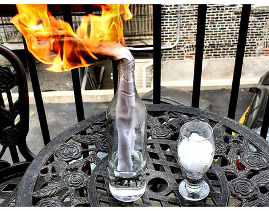
This is not a bottle song. | |
Πέτα και ας είν’ και πέτρες... | |
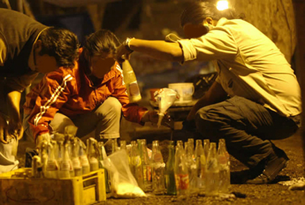
τον έφηβο που σκότωσαν,
την ανεργία,
την οικονομική λιτότητα τόσων χρόνων που κατέληξε σε οικονομική κρίση,
την παντοδυναμία των δύο οικογενειών που έχουν πάρει εργολαβία τον τόπο από το 50 (στα αλήθεια έχει φύγει η βασιλεία;)
την ασυδοσία των καταστημάτων τροφίμων (άλλες τιμές στα ράφια άλλη στο ταμείο),
την παραπαιδεία (φροντιστήρια),
τα φακελάκια στους γιατρούς των νοσοκομείων,
την ανεξέλεγκτη κατάσταση στις τιμές,
την φτώχεια και την ανέχεια των συνταξιούχων,
το σύστημα των φυλακών,
των ψυχιατρείων,
των τραπεζών,
της διαφθοράς,
των μισθών (δεν μιλάμε για τους προνομιούχους των 700 ευρώ),
τα σκατομαλακισμένα τραγουδάκια που μας βάζουν στα καταστήματα τις “γιορτινές ημέρες” για να καταναλώνουμε καλύτερα,
για αυτούς που θέλουν να επωφεληθούν από αυτή την εξέγερση και δεν πρόκειται να αλλάξουν απολύτως τίποτα από όλα αυτά,
για τα δισεκατομμύρια λόγους που όλοι ξέρουμε.....
| |
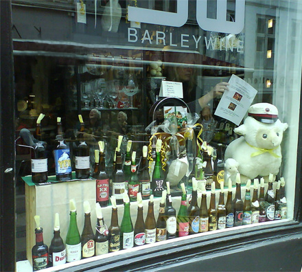
Εξαιρετικά ευέλικτο μάρκετινγκ απο τα καταστήματα στο Κολωνάκι.
Στο Κολωνάκι πιά δεν έχουμε ζωή..... | |
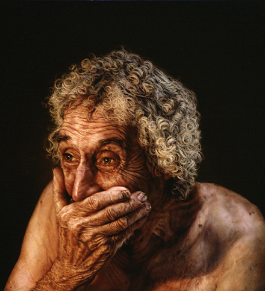
Ο πλούσιος που χαίρει άκρας υγείας, έχει δυσαρεστημένους συγγενείς.
| |
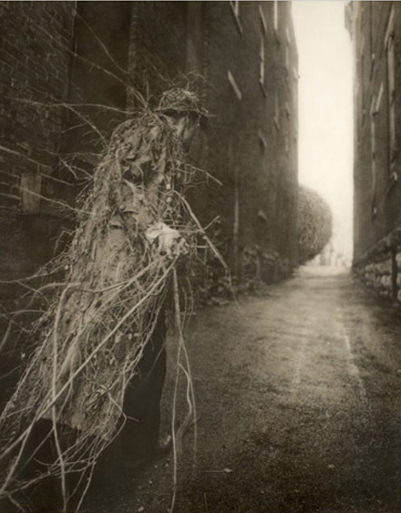
Ο Θρίαμβος γινόταν στη Ρώμη για τους στρατηγούς της. Ωστόσο θρίαμβος γινόταν μόνο άμα μπορούσαν να καταμετρηθούν 5.000 πτώματα. Τόση ήταν εκείνη την εποχή η ταρίφα.
Στο όνομα των θριάμβων έγιναν πολλοί περιττοί πόλεμοι επειδή οι Ρωμαίοι στρατηγοί αναζητούσαν να διασχίσουν στεφανωμένοι τους δρόμους της Ρώμης, ενώ η ζήλια ανάμεσα στους αντιπάλους στρατηγούς υποστήριζε ότι η αξίωσή τους βασιζόταν σε ανεπαρκή συγκομιδή νεκρών.
Robert Graves
| |
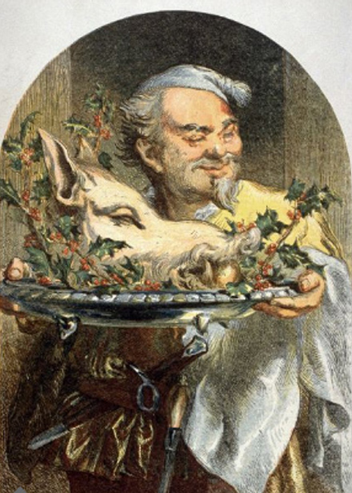
Κάνω 6 – 7 δίαιτες μαζί γιατί με την μία δεν χόρταινα.
| |
Αγαπητέ κύριε επιχειρηματία,
καλώς ήλθατε στην κοινότητα Γουένσφηλντ. Ελπίζω η μέχρι τώρα παραμονή σας στην πόλη να ήταν ικανοποιητική. Και στο δικό μου επάγγελμα είμαι αναγκασμένος να κάνω πολλά ταξίδια κι έχω περάσει και εγώ πολλές νύχτες σε ξενοδοχεία και μοτέλ. Το ξενοδοχείο αυτό που διαμένετε είναι ένα από τα καλύτερα σ’ αυτή τη πλευρά της πόλης. Ιδιαίτερα για το πρόγευμά σας σάς συνιστώ την καφετέρια κάτω. Όπως είπα και παραπάνω, εγώ τις δικές μου δουλειές τις τακτοποιώ ως επί το πλείστον σε ξενοδοχεία σαν αυτό εδώ. Δυστυχώς λείπατε όταν επισκέφτηκα το δωμάτιό σας. Καταλαβαίνετε είμαι κλέφτης ξενοδοχείων και την ώρα που λείπατε λήστεψα το δωμάτιό σας.
Στο μεταξύ εσείς ρίξατε μια ματιά στο δωμάτιο και δεν ανακαλύψατε κανένα ίχνος διάρρηξης. Δεν υπάρχουν αδειασμένα συρτάρια, σκισμένες βαλίτσες, δεν υπάρχει καμία ένδειξη ότι λεηλατήθηκε το δωμάτιό σας. Εγώ πιστεύω πάντα ότι όταν αφήνεις τα πράγματα ωραία, καθαρά και τακτοποιημένα είναι δύσκολο να σου ξεφύγει κάτι που θα άξιζε τον κόπο να το πάρεις μαζί σου. Πέρα από αυτό όμως, αν γυρνούσε η καμαριέρα κι εύρισκε άνω κάτω το δωμάτιο, θα ειδοποιούσε αμέσως τη διεύθυνση του ξενοδοχείου κι αν ερχόταν η αστυνομία την ώρα που ακριβώς εγώ εργάζομαι σε κάποιο άλλο δωμάτιο μπορεί τα πράγματα να γινόταν πολύ δυσάρεστα για μένα.
Ωστόσο εγώ πράγματι τρύπωσα στο δωμάτιό σας και σαν απόδειξη έχω τη γραφομηχανή. Μια ταξιδιωτική γραφομηχανή όμως δεν θα’ πρεπε να τη χώνετε κάτω από ένα κρεβάτι ξενοδοχείου, όπως κάνατε. Από τη μια έτσι γρατζουνάτε τη βαλιτσούλα της γραφομηχανής κι από την άλλη δεν είναι και καμία καλή κρυψώνα.
Θα παρατηρήσατε ίσως ότι το Σι – Μπί σας βρίσκεται ακόμα στην τουαλέτα. Ήθελα να το πάρω και αυτό, αλλά μετά είδα πως από την πίσω μεριά είναι χαραγμένος ο αριθμός του αυτοκινήτου σας. Η φωτογραφική μηχανή από ότι είδα είναι ολοκαίνουργια, ενώ δεν δυσκολεύτηκα καθόλου να βρω στη βαλίτσα σας κάπου 600 δολάρια. Ομολογώ πως παραλίγο να μου ξεφύγουν τα 200 δολάρια στο τζάκετ. Αν δεν προβάριζα το τζάκετ πώς μου πάει, σίγουρα θα μου ξέφευγαν. Το τζάκετ δε μου πήγαινε, τα παπούτσια σας όμως ήταν μια χαρά. Εκεί ανακάλυψα πως στις μύτες από τις καφέ παντόφλες είχατε χώσει 50 δολάρια. Τις παντόφλες τις άφησα. Έχω ήδη δύο ζευγάρια και πραγματικά δεν χρειάζομαι άλλο.
Στο μεταξύ θα αναρωτιέστε, γιατί κάποιος, που τρύπωσε στο δωμάτιό σας στο ξενοδοχείο, κάνει τον κόπο να σας γράψει ένα γράμμα. Είχα δύο λόγους που το έκανα. Ο ένας είναι ότι ήθελα να δοκιμάσω τη γραφομηχανή, αν αξίζει το κόπο να τη σέρνω κάτω στη σκάλα. Ο δεύτερος λόγος είναι πως βρήκα το δεύτερο ζευγάρι κλειδιά. Την ώρα που εσείς διαβάζατε το γράμμα εγώ κάτω άδειαζα το αυτοκίνητό σας.
William F. Laus
| |
|
35 readers online
|